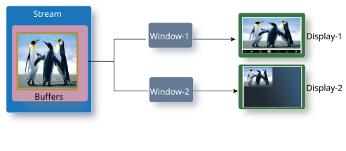
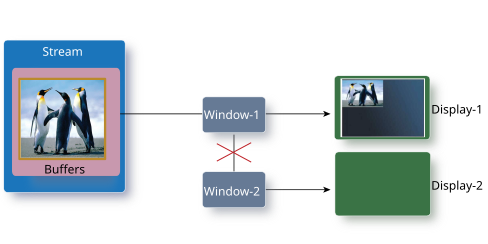

Use buffer sharing when you want a window to display the same content as a stream.
When a stream shares its buffers with a window, there's only one set of buffers. The stream is the owner of the buffers, and the window is simply accessing these buffers. These buffers must have been created with screen_create_stream_buffers() or associated with screen_attach_stream_buffer(). The window doesn't need any buffers itself because it's relying on the use of the buffers owned by the stream. Naturally, the window can't set any of the properties of the buffers; the properties of the shared buffers are controlled by the stream that owns them.
Updates to the shared buffer can be posted only by the stream that owns the buffers. Only the buffers that exist when screen_share_stream_buffers() is called are shared. What this means is that if the stream that owns the shared buffers creates new buffers after screen_share_stream_buffers() was called, then the window doesn't have access to the newly created buffers. The old buffers still exist because the window's associated with the buffers, but they won't be updated. You can call screen_share_stream_buffers() again to update the window with any new or updated buffers.

Screen doesn't allow the sharing of buffers that are already being consumed.
